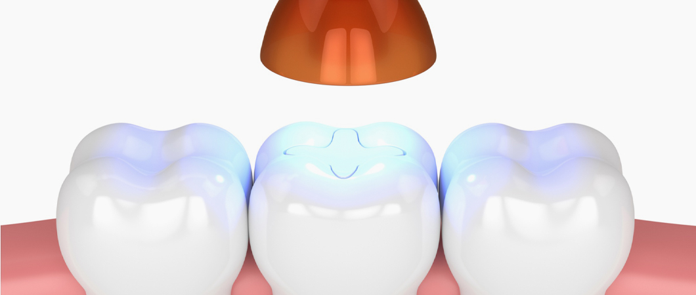
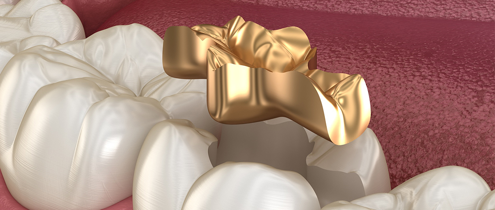
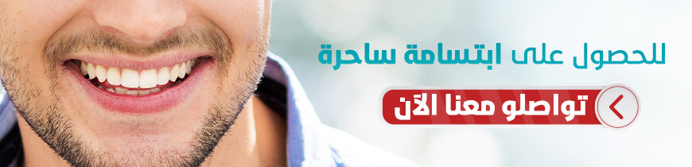
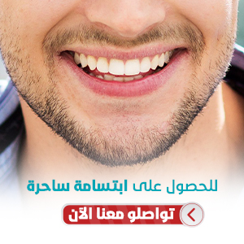
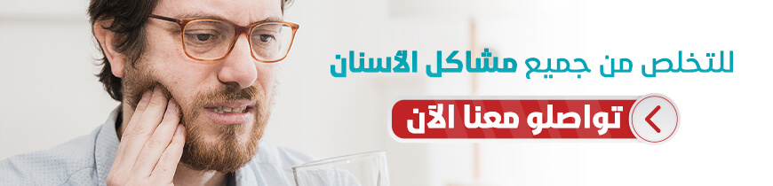
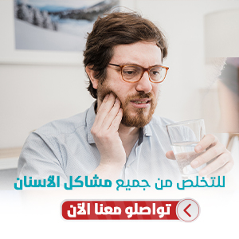

حشو الأسنان في تركيا
حشو الأسنان ومعالجة العصب، تقنيات في طب الأسنان تستعمل لعلاج التسوس وترميم الأسنان المتكسرة، يستخدمها طبيب الأسنان لإعادة الأسنان لشكلها ووظيفتها الطبيعية
دعنا نتصل بك

عملية تحويل مسار المعدة في تركيا
تعدّ عملية تحويل مسار المعدة من أنواع عمليات السمنة، وتهدف لإنقاص وزن المريض الذي يعاني من سمنة مفرط...
عملية الليزك لـ تصحيح النظر في تركيا
أصبحت عملية تصحيح تحدّب القرنية بالليزر (الليزك) العملية الأكثر شيوعاً بين عمليات الليزر لتصحيح مشاك...
تركيب القشور الخزفية في تركيا
علاج الأسنان في تركيا يستند إلى أحدث التقنيات في طب وجراحة الأسنان، مثل القشور الخزفية بأنواعها، وذل...
عملية القلب المفتوح
حاليّاً أصبحت عمليات القلب المفتوح تسمّى بعمليات القلب التقليديّة، وذلك لظهور نوع جديد من العمليات ا...
يلجأ أطباء الأسنان عادة إلى تقنيات حشو الأسنان في تركيا، من أجل علاج التسوس والأسنان المتكسّرة والمهترئة، حيث يقوم طبيب الأسنان بإزالة المنطقة المصابة بالتسوّس، وحشو الحفرة بعد ذلك، باستخدام موادّ مختلفة بعد تنظيف السنِّ، لإعادته إلى شكله الأصليّ ووظيفته الطبيعيّة، ومنع التسوس الذي قد ينتج عن وجود حفر بالأسنان.

متى يحتاج المريض لحشوة سنّيَّة؟
عندما تزور الطبيب لتكشف عن أسنانك، يتفحَّص الطبيب أسطح الأسنان للكشف عن أيّ تغيُّرات مرضيَّة، وقد يحتاج إلى صور بانورامية بالأشعة x-ray وبعد الكشف تتحدّد طبيعة العلاج، ويعتمد ذلك على مدى تضرّر السن، وفي حال وجود تسوُّس يقوم طبيب الأسنان بإزالة الأجزاء التالفة وحشوها بإحدى المواد المستخدمة في حشو الأسنان.
ما هي معالجة العصب؟
هي علاج لبِّ السن الذي يعاني من التهاب أو عدوى. ولُبُّ السن هو المادّة الرخوة الموجودة في مركز السن أو الضرس، في مكان يسمى حجرة اللُّب Pulp Chamber، وهو تجويف السن، الذي يوجد في داخله العصب والأوعية المغذّية للسن.
عند علاج عصب السن، يقوم طبيب الأسنان بتنظيف حجرة اللب وتعقيمها، ومَلئها بأحد مواد الحشوة الدائمة.
المواد المستخدمة في حشوات الأسنان
يمكن أن يتمّ حشو الأسنان بالذهب، أو مزيج الفضة (وهو عبارة عن الزئبق والفضة، وبعض النحاس والزنك)، أو البورسلين، أو مواد أخرى، وهنا نتعرف على بعض هذه الأنواع بشيء من التفصيل:
حشوات الذهب
تتقبلها الأنسجة الفموية بشكل جيد، وتدوم لوقت طويل، لدرجة أنّ بعض خبراء طب الأسنان يعتبرونها المادة الأفضل؛ لقوَّتها ومقاومتها للزمن ولجمالها طبعاً، ولكنّها لا تخلو من بعض السلبيّات مثل ارتفاع ثمنها، كما قد ينتج عنها تيّار كهربائي عندما توضع بجوار حشوة خليط الفضة، ما قد يتسبب ببعض الألم أو الإزعاج في الفم.

حشوات الفضة (ملغم الفضة)
تتميز حشوات ملغم الفضة بانخفاض تكاليفها وقوّتها، ولكنها داكنة اللون، ما يجعلها مزعجة لبعض المرضى، لهذا السبب فإنها لا تستخدم في الأسنان الأماميّة عادةً، وإحدى سلبيّاتها أنّها تتطلّب مساحة كبيرة نسبيّاً، ما يجبر طبيب الأسنان على حفر مساحة أكبر غير متسوسة من السن، وتسبّب حشوات الفضة حساسية لدى بعض الأشخاص نتيجة وجود الزئبق في تركيبها.
الحشوات البلاستيكية (حشوات الكومبوزيت)
وتتميّز بلونها المماثل للون السن الطبيعي، ما يعطي للسنَّ بعد حشوه منظراً طبيعيّاً، ولهذا السبب يفضّله كثير من المرضى، ولكن من سلبيّاته أنّه يتصبّغ مع شرب القهوة أو الشاي أو السجائر، ولا يتميّز بطول عمره وتحمُّله مثل بعض الأنواع الأخرى، بالإضافة إلى أنّه غير مناسب لسدِّ الفجوات الكبيرة.
حشوات السيراميك أو البورسلان
وهي مادة مصنوعة من الخزف، وتتميّز بعدم قابليتها للتصبُّغ، وطول عمرها، حيث تعمِّر ما يقارب 15 سنة، ولكنّها مرتفعة التكلفة نسبياً.
الحشوة الزجاجية
وهي مكونة من مزيج من مادة الزجاج والأكريليك، ولكنّها ضعيفة وقليلة التحمُّل، حيث لا تصمد أكثر من 5 سنوات عادةً، وهي معتدلة السعر، وهناك جهود مستمرة لتطوير هذا النوع من الحشوات.


ما أفضل أنواع حشوات الأسنان؟
لكلّ من الأنواع المذكورة إيجابيّاتها وسلبيّاتها، واستخدام أحدها دون الآخر يعتمد على طبيعة الفجوة المراد حشوها، ووجهة نظر المريض من ناحية تجميلية، وعدم وجود الحساسية تجاه مادة معيّنة، بالإضافة إلى أسباب أخرى يراعيها الطبيب بحسب حالة المريض.
خطوات حشو الأسنان ومعالجة العصب
سيقوم طبيب الأسنان بتنظيف التسوّس، وحشو الأسنان، أو علاج العصب، مروراً بالخطوات التالية:
- يستخدم طبيب الأسنان مخدّراً موضعيّاً لتخفيف الألم.
- يستخدم أداة خاصّة لإزالة الجزء المتضرّر أو المتسوّس، ومن ثَمَّ ينظّف السنَّ تماماً في المناطق المتضرّرة.
- في حال وصول الضرر إلى لبِّ السنِّ بحسب الصورة البانورامية، قد يقوم طبيب الأسنان بتنظيف قنوات العصب وتوسيعها وتعقيمها.
- يقوم طبيب الأسنان باستخدام أحد مواد الحشو لملء الفراغ، وفي حالات علاج العصب يقوم الطبيب بوضع حشوات مخروطيّة في قنوات العصب أيضاً.
مراحل تركيب حشوات الأسنان
يستخدم طبيب الأسنان مخدّراً موضعيّاً لتخفيف الألم قبل الحفر
يستخدم طبيب الأسنان أداة خاصّة لإزالة الجزء المتضرّر أو المتسوّس، ومن ثَمَّ ينظّف السنَّ تماماً في المناطق المتضرّرة
في حال وصول الضرر إلى لبِّ السنِّ بحسب الصورة البانورامية، قد يقوم طبيب الأسنان بتنظيف قنوات العصب وتوسيعها وتعقيمها
يقوم طبيب الأسنان باستخدام أحد مواد الحشو لملء الفراغ، وفي حالات علاج العصب يقوم الطبيب بوضع حشوات مخروطيّة في قنوات العصب أيضاً
كم مدة تركيب حشوات الأسنان في تركيا؟
قد تتمّ الخطوات على جلسة واحدة أو أكثر، وفي حال تمّت على أكثر من جلسة، يستخدم طبيب الأسنان حشوات مؤقّتة لإبقاء مكان العمل نظيفاً لحين الجلسة القادمة.
وقد يستخدم الطبيب في الجلسة الأخيرة تاجاً صناعياً من البورسلان أو المواد الأخرى لتغطية السن.
هل لديك إستفسار : تواصل معنا - الإستشارة مجانية


علاجك الطبية .. لتكن الصحة تاجك.